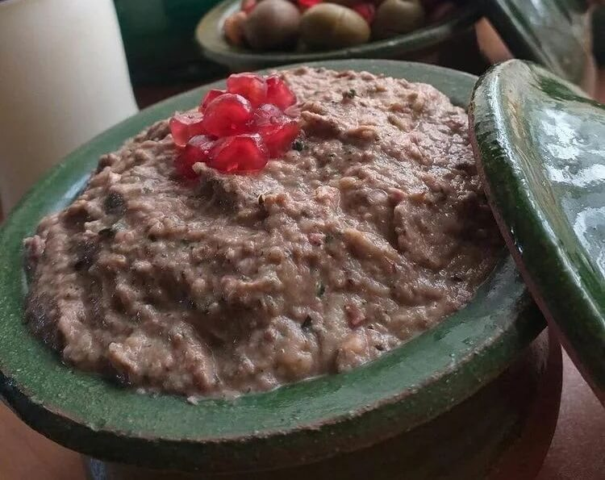

کال کباب
تاریخچه
کال کباب یکی از انواع غذاهای معروف و بسیار خوشمزه شمالی است که با بادمجان تهیه می شود. طعم این غذا به دلیل دودی بودن بادمجان شباهتهایی به میرزا قاسمی دارد.اما میرزا قاسمی نیست.
مواد لازم
- بادمجان
- گردو
- سیر
- آبغوره
- نعناع خشک
- چوچاق (اختیاری)
- نمک و فلفل سیاه
طرز تهیه
- ابتدا بادمجان را با پوست روی منقل ذغال یا حرارت شعله گاز قرار می دهیم تا کبابی شوند. اگر دوست ندارید بادمجان ها مانند میرزا قاسمی طعم دودی داشته باشند حتما بادمجان ها را در فر کباب کنید، زیرا با این کار بادمجان ها طعم دودی نمی گیرند.
- برای کباب کردن بادمجانها میتوانیم از اجاق گاز هم استفاده کنیم و نکته دیگر اینکه در زمان کباب کردن حتما باید پوست بادمجانها روی آنها باشد، وگرنه طعم دودی نمیگیرند.
- پس از اینکه بادمجان ها را کباب کردیم صبر می کنیم تا کمی خنک شوند، سپس آنها را به آرامی پوست می گیریم و داخل یک قابلمه جادار و مناسب می ریزیم. در ادامه سیرها را پوست می گیریم و به بادمجان اضافه می کنیم.
- در این مرحله سبزیجات معطر را به صورت ساطوری خرد می کنیم و به همراه مقداری نمک و فلفل سیاه به قابلمه اضافه می کنیم. در آخر گردوهای آسیاب شده را به همراه آبغوره به قابلمه اضافه می کنیم و تمام مواد را میکس می کنیم.
- برای میکس کردن مواد می توانیم از گوشتکوب برقی استفاده کنیم یا اینکه تمام مواد را داخل میکسر یا مخلوط کن بریزیم تا کاملا یکدست و شبیه پوره شوند. در صورت تمایل میتوانیم مقداری آب انار ترش هم به کال کباب اضافه کنیم.
- در آخر کال کباب را داخل ظرف مورد نظرمان می کشیم و به سلیقه خود با موادی مثل گلپر، با انار دان شده، مغز گردو و آب انار تزیین می کنیم. این غذای خوشمزه را به همراه نان تازه و سبزی خوردن سرو میکنیم.
- اگر در خانه آب انار تازه ندارید، نگران نباشید. یکی از بهترین جایگزینها برای آب انار، آبغوره تازه است. اما مهم است که بدانید استفاده از آبلیمو در تهیه این غذا توصیه نمیشود و باعث بدطعم شدن کال کباب میشود.